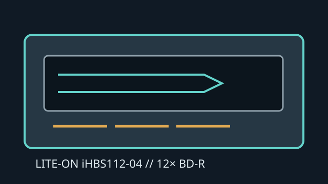

[ INTERNAL BLU-RAY WRITER ]
Lite-On iHBS112-04
Internal 12× BD-R writer with SATA connection and support for BD, DVD and CD recordable/re-writable media. Exact media compatibility depends on disc code and firmware.

IDENTIFICATION: Lite-On iHBS112-04. Do not assume firmware from a different iHBS112 suffix is interchangeable.
Documented specifications
| Media read/write formats | Reads BD-ROM, BD-R/RE, DVD-ROM, DVD±R/RW, DVD±R DL, DVD-RAM and CD-ROM/R/RW. Writes BD-R/RE, DVD±R/RW, DVD±R DL and CD-R/RW; confirm DVD-RAM support against the exact firmware/media table. |
|---|---|
| Maximum speeds | BD-R up to 12× (single layer), BD-R DL up to 8×, BD-RE up to 2×; BD-ROM read up to 8×. DVD±R up to 16×, DVD±R DL up to 8×; CD-R up to 48× and CD-RW up to 24×. |
| Interface and physical bay | Internal 5.25-inch half-height tray drive with SATA data and SATA power. Requires compatible desktop bay, mounting and cable clearances. |
| Host and firmware compatibility | Use a SATA controller and an OS with optical ATAPI support. Blu-ray playback is provided by suitable third-party software, not by the mechanism alone. Select write speed based on supported media ID and firmware; do not cross-flash variants. |
Manual and technical sources
- CDRLabs — Lite-On iHBS112 reviewModel family test and specification coverage, including format and speed details.
- Lite-On manuals at ManualsLibManual index for locating legacy Lite-On optical-drive instructions; verify the exact model suffix.
- Lite-On optical-drive manualsManual archive for identifying operating documentation; verify the full iHBS112-04 suffix.
Secondary reviews aid identification; the exact drive label and its compatible media/firmware list take precedence.